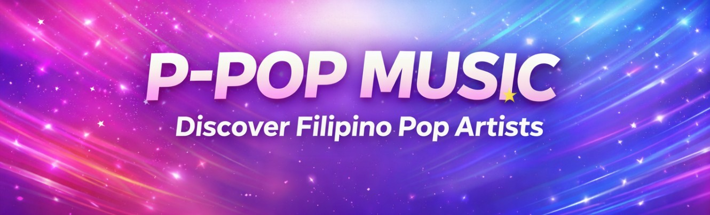

P-Pop or Pinoy Pop is a modern Filipino music genre that continues to grow in popularity. It showcases talented Filipino artists, creative performances, and inspiring music.

P-Pop became more recognized through successful groups like SB19. Their song "Go Up" became popular and helped introduce Filipino pop music to more listeners worldwide. Because of this, many people began supporting P-Pop and discovering local talent.
Today, P-Pop continues to inspire many young artists and music fans in the Philippines and around the world.